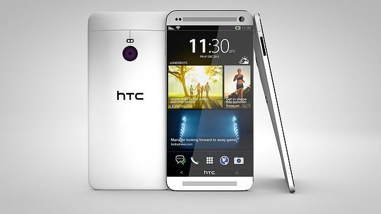

HTC ONE (M8)

El nuevo HTC One es el teléfono del que ya se conocía prácticamente todo de él un mes antes de su presentación. HTC ha apostado por ponerlo a la venta inmediatamente una vez mostrado en sociedad, por lo que es el primer buque insignia con procesador Snapdragon 801 que se cuela en el top 5. Le acompañan unas características que no tienen mucho que envidiar a los demás. Entre las novedades se encuentra la inclusión de una tarjetas microSD, pero el mismo diseño y acabado en aluminio que tan buenas críticas le proporcionó al modelo del año pasado.
El punto débil con respecto a otros teléfonos es la cámara. HTC ha querido mantener sus "ultrapíxels" y quizás esté siendo un gran detrimento para el teléfono. Eso sí, saca buenas fotos, es excepcional a la hora de sacar fotos con poca luz (mucho mejor que los demás), pero no es el teléfono que utilizarías para sacar buenas fotos en cualquier situación. Aun así, el software que le acompaña es interesante, el modo de ahorro de batería es estupendo, y el conjunto de especificaciones, diseño y software lo convierten (por algunas semanas al menos) en el mejor smartphone Android del momento. Su precio es actualmente de 729 euros, pero a finales de abril seguramente esté más rondando los 599 euros, ya que el mundo Android baja de precio muy rápidamente.